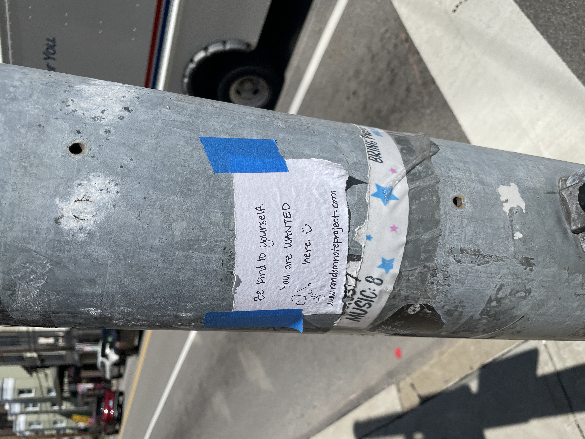
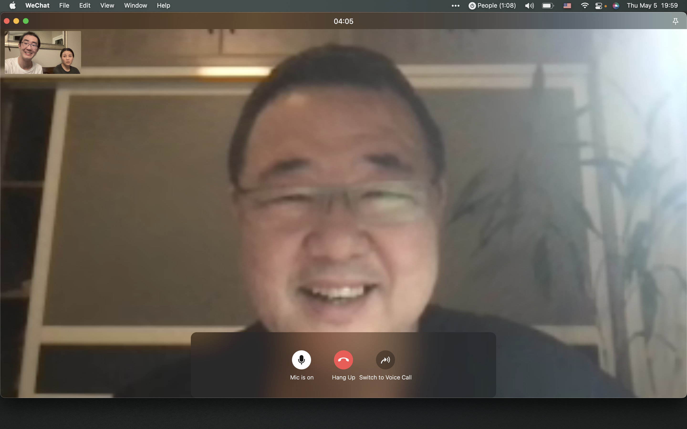
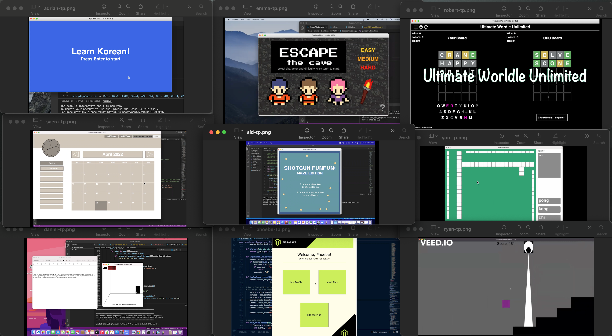
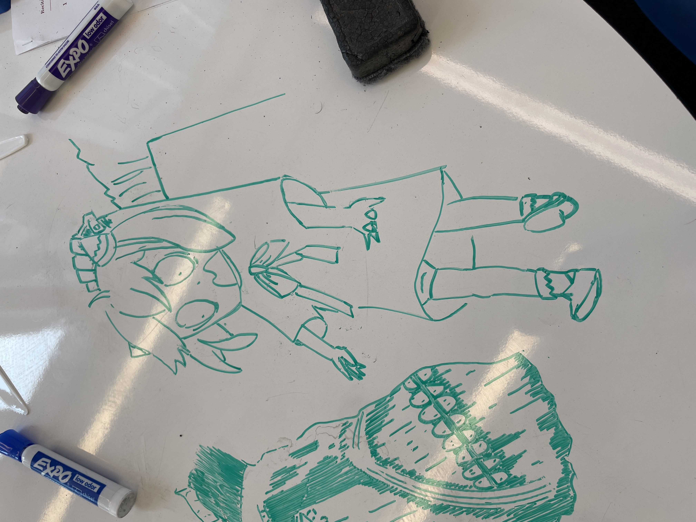

Life Updates
Synchronous Response, Sharing Pictures
One example of pictures I took :DWished to focus more on people I surround myself with.
For turning notifications back on, originally felt contracting to what I wrote last month, via Deleting Social Medias, though trying to limit the number of people I care about, putting more effort into people I do care, these two should coexist.
Along with that, started taking more pictures with the intention of sharing them. Sophie mentioned friends ‘not just care about each other, but also keep each other in the loop’.
Had questions while attempting it, like, how does one remember to take pictures? Asked that to mom and she said
It’s less about remembering, but more about having others in mind, people you wish to share
…And that was the ‘ah ha’ moment lol, reminded of a tip read about writing better blogs
Pick one obsessive person to write for, and let them be a proxy for the kind of reader you want to attract.
Via Write for One Person. It became much easier after that, every time I saw something this thought of ‘oh I bet they would like to see this too’ just naturally surfaces to my mind.
Deep Convo, Chat with Family, Emotional Granularity
Learned the idea of deep convo, updated my family about the past two years of college.
Ping-Ya abides by three pillars of communication, directness, honesty, and confidentiality, happened to follow the exact opposite when chatting with parents lol, I simply don’t communicate with them.
So just imagine, after dinner sitting by the kitchen table, lights half dimmed, starting a video call, throwing everything you’ve written on the blog to them in the past two years, and ending it with ‘yup I know that was a lot can we take a selfie together’.
...and we took a selfie togetherTold them about TAing, my gap year, and coming back to school. Overall the conversation was quite chaotic, mixed feelings with me and parents, though do think it was quite valuable.
For me, was able to label different emotions going through myself during the conversation. Allowing myself to spectate and not fully immersed, I felt more mature perhaps.
With my parents, realized that it’s less about them intentionally ignoring my needs, they simply don’t know a different way, as mom and dad had flaws in their family growing up.
It felt ironic because, both me and my parents were holding shields as we don’t understand each other, and it was only until we put it down, that we were truly able to do so.
Term Projects, Knowing When’s Enough
I am so proud of you all :')More of an observation, my mentees’ ability to stop and be content with what they have.
During Term Project season for the course we TA in, I asked every mentee of mine what grades they wish to get. With some calculations many of them said with pleasant surprise
Dude I only need a 80 to keep my current grade (okay not all said dude most were pretty respectful)
And that’s exactly what they did lol. Mind you that most features they did post MVP merely got them any algorithmic points. I was worried, but then my garding partner, first thing after seen live demos from my mentees
Damn your mentees all look so happy
And I was like, yeah that’s true, grades was never their priority.
My mentees were the perfect example of Half-assing it with everything you’ve got, they know how to reach their desired goal with no wasted motion.
And for me, grades was the single metric that I valued, when there are other factors that’s not on the grading rubric, things like happiness and passion. They reached their grade goal, felt satisfied with what they had, and prioritized on other metrics they have on the project.
In my final thank you email I wrote
Thanks for hand holding me through wordle basics, showing me the possibility of getting an electric skateboard, reaching out to me on completely none 112 updates, citing tuna salad recipes, and teaching me to feel content with what we have, instead of what could have being :D.
Happiness is the difference between what you have, and your definition of enough. Thought I was supposed to be the one that guided their path, turns out I was the one that learned the most from these lovely people lol.
Failed Confession
placeholderWas drawing my thoughts and realized there aren’t much more to share, I have mentioned most things I learned above.
Family chat, synchronous response, and TP season were more on what I did, failed confessions felt like the reason why I did them. Through the failed confession I learned the power of direct communication, this wish to have others on my mind, and overall, be satisfied with how the relationship has evolved.
Questions still lingers in my head though, I am confused on how to approach this new relationship, unsure about my next step. Asked Thomas and he said
There isn’t a canonical answer for a question this diverse, … willing to experience and discover together how complex life is, that’s my definition of an intimate relationship
Be willing to show who I truly am, to listen and understand, express and grow with my counterpart, perhaps that’s what I wish to work on next.